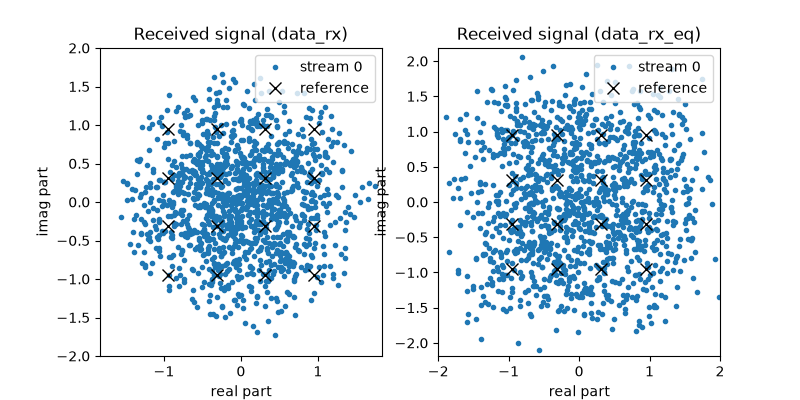
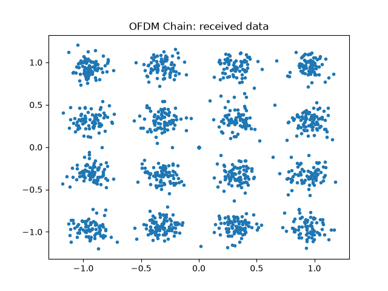

OFDM Tutorial#
In this tutorial, we compare the performance of a Single Carrier (SC) system
and an OFDM system over a frequency-selective multipath channel using the comnumpy library.
What you’ll learn:
How to define and simulate a frequency-selective channel.
How to evaluate performance using the Symbol Error Rate (SER) and the runtime.
What OFDM actually buys against single-carrier equalization – and what it costs.
This tutorial is suitable for engineers and students interested in digital communications, combining practical examples with theoretical insights.
Introduction#
Import Libraries#
We start by importing the necessary libraries:
import numpy as np
import matplotlib.pyplot as plt
import time
from comnumpy.core import Sequential
from comnumpy.core.generators import SymbolGenerator
from comnumpy.core.mappers import SymbolMapper, SymbolDemapper
from comnumpy.core.channels import AWGN, FIRChannel
from comnumpy.core.compensators import LinearEqualizer
from comnumpy.core.utils import get_alphabet
from comnumpy.core.metrics import compute_ser
from comnumpy.ofdm.chains import OFDMTransmitter, OFDMReceiver
Simulation Parameters#
Next, we define the parameters of the communication chain, including the modulation order and the channel impulse response for a frequency-selective channel:
# parameters
M = 16
N_h = 5
N = 1280
sigma2 = 0.015
alphabet = get_alphabet("QAM", M)
# A frequency-selective channel, drawn from an exponential power delay
# profile -- the standard multipath model -- and seeded, because the
# whole comparison below is about one realization. Its frequency
# response has a deep notch (|H| spans a factor 31), which is what
# "frequency selective" means and what the two receivers will disagree
# about.
rng = np.random.default_rng(18)
power = np.exp(-np.arange(N_h) / 2.0)
power = power / np.sum(power)
h = np.sqrt(power / 2) * (rng.standard_normal(N_h)
+ 1j * rng.standard_normal(N_h))
Here, h represents the channel impulse response, drawn from an
exponential power delay profile – the standard multipath model – and
seeded, because the whole comparison below is about one realization. Its
frequency response spans a factor of 31 between its strongest and weakest
subcarrier: that notch is what “frequency selective” means, and it is what
the two receivers will disagree about.
Frequency-Selective Channel#
The input-output relation of a frequency-selective channel is:
where \(h[l]\) are the channel taps and \(b[n]\) is the noise. This is also called a Finite Impulse Response (FIR) channel.
Stacking \(N\) samples into a vector form:
where \(\mathbf{H}\) is a Toeplitz convolution matrix constructed from the taps. This formulation highlights that ISI (Inter-Symbol Interference) is unavoidable in SC systems.
Single-Carrier Communication Chain#
The SC chain is defined as:
flowchart LR
data_tx["SymbolGenerator"]
symbol_mapper["SymbolMapper"]
fir["FIRChannel"]
data_rx["AWGN"]
data_rx_eq["LinearEqualizer"]
symbol_demapper["SymbolDemapper"]
data_tx --> symbol_mapper
symbol_mapper --> fir
fir --> data_rx
data_rx --> data_rx_eq
data_rx_eq --> symbol_demapper
classDef tapped stroke-dasharray: 4 2
class data_tx,data_rx,data_rx_eq tapped
That diagram is not drawn by hand: it is simple_chain.to_mermaid(),
exported by the script at the end of its run (decision D33c). The block
names are the ones the code uses, and a dashed outline marks a tapped
block – so the picture cannot say something the chain does not.
At the receiver, we apply a Zero-Forcing (ZF) equalizer:
where \(\mathbf{H}^{\dagger}\) is the pseudo-inverse of \(\mathbf{H}\).
Implementation#
The chain is implemented in comnumpy as follows:
simple_chain = Sequential([
SymbolGenerator(M, name="data_tx"),
SymbolMapper(alphabet),
FIRChannel(h),
AWGN(sigma2=sigma2, name="data_rx"),
LinearEqualizer(h, method="zf", name="data_rx_eq"),
SymbolDemapper(alphabet)
], taps=["data_tx", "data_rx", "data_rx_eq"])
Results#
We evaluate the performance by computing the SER and the execution time, then plot the constellation before and after equalization:
simple_chain.seed(1)
start_time = time.time()
s_rx = simple_chain(N)
stop_time = time.time()
# extract signals, compute ser and elapsed time
s_tx = simple_chain.tap("data_tx")
ser = compute_ser(s_tx, s_rx)
elapsed_time = stop_time - start_time
print(f"SER: {ser}")
print(f"elapsed time: {elapsed_time} s")
# plot signal and save
fig, axes = plt.subplots(nrows=1, ncols=2, figsize=(8, 4))
for indice, processor_name in enumerate(["data_rx", "data_rx_eq"]):
data_rx = simple_chain.tap(processor_name)
axes[indice].plot(np.real(data_rx), np.imag(data_rx), ".")
axes[indice].set_title(f"Received signal ({processor_name})")
axes[indice].set_aspect("equal", adjustable="box")
axes[indice].set_xlim([-2, 2])
axes[indice].set_ylim([-2, 2])
plt.savefig(f"{img_dir}/one_shot_ofdm_fig1.png")
# create an OFDM chain and simulate
For the SC chain, we obtain:
SER: 0.12109375
elapsed time: 1.70 s
Twelve percent of the symbols are wrong, and it took more than a second of computation for 1280 symbols. Both numbers matter. The error rate is the notch: zero forcing inverts the channel, so where \(|H(f)|\) is small it multiplies the noise by \(1/|H(f)|\), and that amplified noise is spread over the whole block. The second number is the price of doing it this way – the equalizer builds the \((N + L - 1) \times N\) convolution matrix and pseudo-inverts it, which costs \(O(N^3)\).
{kind=link}

OFDM Communication Chain#
In SC systems, equalization requires matrix inversion, which is computationally expensive. OFDM transforms the channel into a set of parallel flat-fading subchannels, each equalized with a simple one-tap filter. This drastically reduces computational complexity and improves performance.
The OFDM chain can be visualized as:
flowchart LR
data_tx["SymbolGenerator"]
symbol_mapper["SymbolMapper"]
ofdm_transmitter["OFDMTransmitter"]
fir["FIRChannel"]
awgn["AWGN"]
data_rx["OFDMReceiver"]
symbol_demapper["SymbolDemapper"]
data_tx --> symbol_mapper
symbol_mapper --> ofdm_transmitter
ofdm_transmitter --> fir
fir --> awgn
awgn --> data_rx
data_rx --> symbol_demapper
classDef tapped stroke-dasharray: 4 2
class data_tx,data_rx tapped
OFDMTransmitter and OFDMReceiver are themselves chains, and they
are drawn from their own chain attribute rather than described:
Transmitter (TX)
flowchart LR
s2_p["Serial2Parallel"]
carrier_allocator_tx["CarrierAllocator"]
ifft["IFFTProcessor"]
cp_adder["CyclicPrefixer"]
p2_s["Parallel2Serial"]
s2_p --> carrier_allocator_tx
carrier_allocator_tx --> ifft
ifft --> cp_adder
cp_adder --> p2_s
Receiver (RX)
flowchart LR
s2_p["Serial2Parallel"]
cp_remover["CyclicPrefixRemover"]
fft["FFTProcessor"]
frequency_domain_equalizer["FrequencyDomainEqualizer"]
carrier_extractor["CarrierExtractor"]
p2_s["Parallel2Serial"]
s2_p --> cp_remover
cp_remover --> fft
fft --> frequency_domain_equalizer
frequency_domain_equalizer --> carrier_extractor
carrier_extractor --> p2_s
The diagram above is not drawn by hand. It is what the chain says about
itself – chain.to_mermaid() (decision D33c) – exported by the
script, so the block names are the ones the code uses and a dashed
outline marks a tapped block:
# The chain diagrams this tutorial shows are exported from the chains
# themselves (D33c), so the picture cannot drift from the code -- the
# smoke test compares what a run writes with what the page displays.
mermaid_dir = "../../docs/examples/mermaid/"
for diagram_name, diagram_chain in [("ofdm_single_carrier", simple_chain),
("ofdm_chain", ofdm_chain),
("ofdm_transmitter", ofdm_chain[2].chain),
("ofdm_receiver", ofdm_chain[5].chain)]:
with open(f"{mermaid_dir}/{diagram_name}.mmd", "w") as stream:
stream.write(diagram_chain.to_mermaid())
Key blocks, under the names the diagrams show:
Serial2Parallel/Parallel2Serial: reshape between the serial stream and the parallel blocks OFDM works on.IFFTProcessor/FFTProcessor: transform between the frequency and the time domain.CyclicPrefixer/CyclicPrefixRemover: add and remove the cyclic prefix that turns the linear convolution into a circular one.CarrierAllocator/CarrierExtractor: place the data and pilot symbols on their subcarriers, and take them back.FrequencyDomainEqualizer: one complex division per subcarrier.
Mathematically, the received vector is:
with \(\mathbf{D} = \mathrm{diag}(H[0], H[1], \dots, H[N-1])\), where \(H[k]\) is the channel frequency response. Thus, OFDM reduces equalization to a diagonal system.
Implementation#
The OFDM chain in comnumpy is implemented as:
N_carrier = 128
N_cp = 10
ofdm_chain = Sequential([
SymbolGenerator(M, name="data_tx"),
SymbolMapper(alphabet),
OFDMTransmitter(N_carrier, N_cp), # <- add OFDM transmitter
FIRChannel(h),
AWGN(sigma2=sigma2),
OFDMReceiver(N_carrier, N_cp, h=h, name="data_rx"), # <- add OFDM receiver
SymbolDemapper(alphabet)
], taps=["data_tx", "data_rx"])
ofdm_chain.seed(1)
Results#
We compute the SER and runtime, then plot the received constellation:
start_time = time.time()
s_rx = ofdm_chain(N)
stop_time = time.time()
# extract signals, compute ser and elapsed time
s_tx = ofdm_chain.tap("data_tx")
data_rx = ofdm_chain.tap("data_rx")
ser = compute_ser(s_tx, s_rx)
elapsed_time = stop_time - start_time
print(f"SER: {ser}")
print(f"elapsed time: {elapsed_time} s")
# plot signal and save
plt.figure()
plt.plot(np.real(data_rx), np.imag(data_rx), ".")
plt.title("OFDM Chain: received data")
plt.savefig(f"{img_dir}/one_shot_ofdm_fig2.png")
For the OFDM chain, we obtain:
SER: 0.04140625
elapsed time: 0.0015 s
Three times fewer errors, in a thousandth of the time: 1.5 ms against 1.70 s for the same 1280 symbols. And the time ratio is not a constant – the single-carrier equalizer grows as \(N^3\) while OFDM grows as \(N \log N\) – so the comparison only gets more lopsided with the block size. That is the reason wideband receivers are built this way.
Where the ranking comes from, and where it flips
One operating point is not a conclusion, so the script runs both chains again over a range of noise variances:
# The ranking is not a property of the two schemes, it is a property of
# the operating point -- so the two chains are run again over a range of
# noise variances, and the crossing is printed rather than asserted.
print("sigma2 single carrier OFDM |H| spans "
f"{np.max(np.abs(np.fft.fft(h, N_carrier))) / np.min(np.abs(np.fft.fft(h, N_carrier))):.0f}")
for variance in [0.015, 0.008, 0.004, 0.002]:
row = []
for chain, block in ((simple_chain, "data_rx"), (ofdm_chain, "awgn")):
chain.seed(1)
chain.set_params(**{f"{block}.sigma2": variance})
detected = chain(N)
row.append(compute_ser(chain.tap("data_tx"), detected))
print(f"{variance:6.3f} {row[0]:16.4f} {row[1]:9.4f}")
sigma2 single carrier OFDM |H| spans 31
0.015 0.1211 0.0414
0.008 0.0242 0.0242
0.004 0.0008 0.0148
0.002 0.0000 0.0094
The ranking crosses over, and the reason is structural rather than numerical. Both receivers are zero forcing, so both amplify the noise by \(1/|H|\) where the channel is weak; what differs is where that amplified noise goes.
The single-carrier equalizer inverts a linear convolution: \(N + L - 1\) observations for \(N\) unknowns, an overdetermined system whose least-squares solution never divides by exactly zero, and whose residual noise is spread over every symbol of the block. OFDM inverts a circular one: the cyclic prefix makes the system exactly determined, \(N\) equations for \(N\) unknowns, one per subcarrier – so a subcarrier that falls in the notch is divided by a small number and nothing else can help it.
Concentrated damage wins at low SNR and loses at high SNR. At \(\sigma^2 = 0.015\) everything is marginal and spreading the enhanced noise over all 1280 symbols ruins them all, while OFDM only ruins the handful of subcarriers in the notch. At \(\sigma^2 = 0.002\) the spread noise has fallen below the decision threshold everywhere and the single carrier makes no error at all, while OFDM keeps an error floor: those subcarriers are dead whatever the SNR.
That floor is not a defect of the model, it is the reason no real OFDM system is uncoded. A code spread across the subcarriers repairs exactly the carriers the notch killed – and the FFT is what makes the receiver affordable in the first place.
{kind=link}

Conclusion#
You have compared Single Carrier and OFDM systems over a multipath channel.
You have learned how to:
Model a frequency-selective FIR channel in
comnumpy.Simulate both SC and OFDM systems on the same channel realization.
Apply ZF equalization (SC) vs. one-tap equalization (OFDM).
Compare the two in symbol error rate and in computational cost, and see that the second is where the difference lies.
Key takeaway: OFDM turns a frequency-selective channel into a set of flat subchannels, so equalization becomes one complex division per subcarrier instead of an \(N \times N\) matrix inversion. That is what makes wideband receivers affordable; the per-subcarrier error rate it gives up is bought back by coding across the subcarriers.